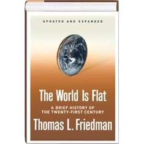

The World is Flat
MIT Thomas Friedman Lecture - this video podcast introduces you to Friedman’s concept of Globalization 3.0. It’s a new era of globalization that gained momentum just a few years ago, when “a global, web-enabled platform,” enabling the “sharing of knowledge and work, irrespective of time, distance, geography and increasingly even language,” started flattening the world and empowering individuals anywhere to become players in the global economy. (Open Culture)
| “ Our parents were telling us: “Finish your dinner. There are children in China and India who are starving.” Now, we should be warning our children: “Finish your homework. There are students in China and India who want your job.” |
From Wikipedia - the list of Friedman's Ten Flatteners that will ultimately impact on education:
- Collapse of Berlin Wall
- Netscape: Netscape and the Web broadened the audience for the Internet
- Workflow software: The ability of machines to talk to other machines with no humans involved.
- Open sourcing: Communities uploading and collaborating on online projects.
- Outsourcing: Friedman argues that outsourcing has allowed companies to split service and manufacturing activities into components
- Offshoring: Manufacturing's version of outsourcing.
- Supply chaining: Wal-Mart is the best example of a company using technology to streamline item sales, distribution, and shipping.
- Insourcing: UPS is a prime example for insourcing, in which the company's employees perform services--beyond shipping--for another company
- In-forming: Google and other search engines are the prime example.
- "The Steroids": Personal digital devices like mobile phones, iPods, personal digital assistants, instant messaging, and voice over IP (VoIP) .
Virtual Education explains each of Friedman's ten flatteners and then discusses what we need to learn in a flat world.